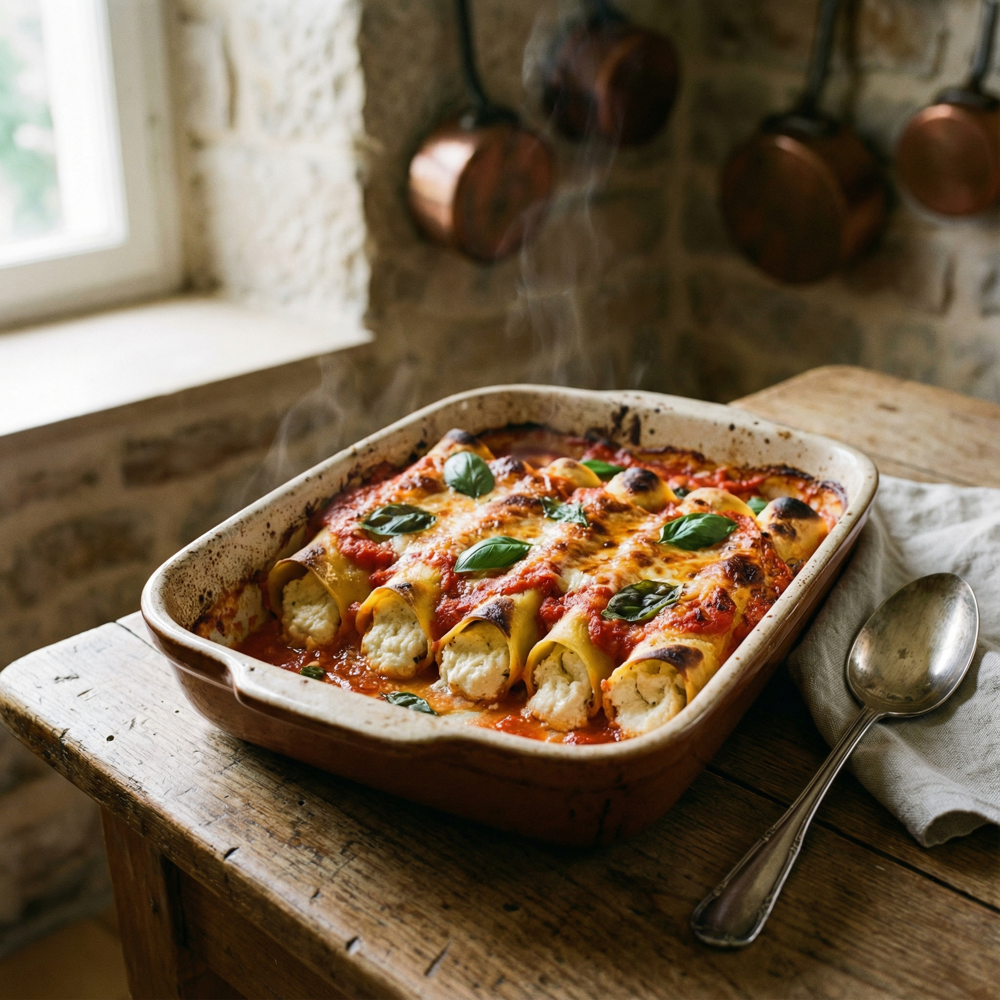
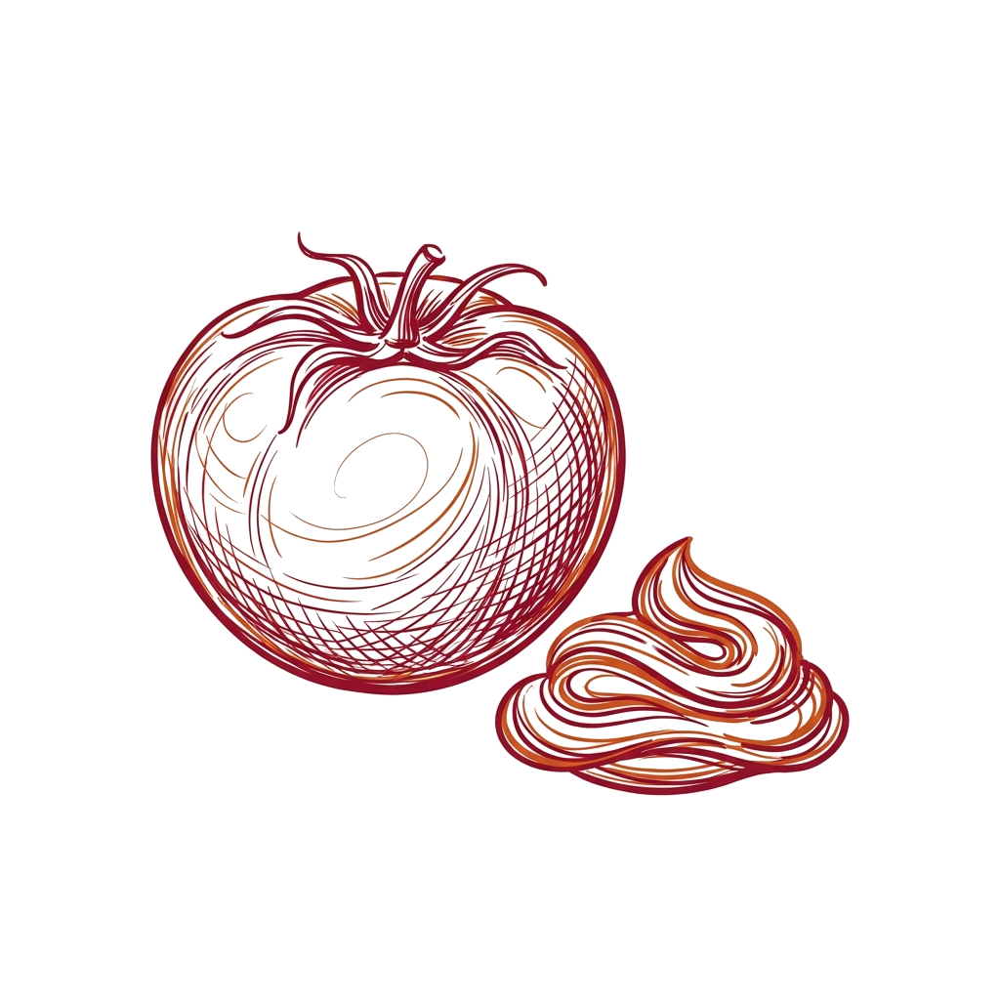
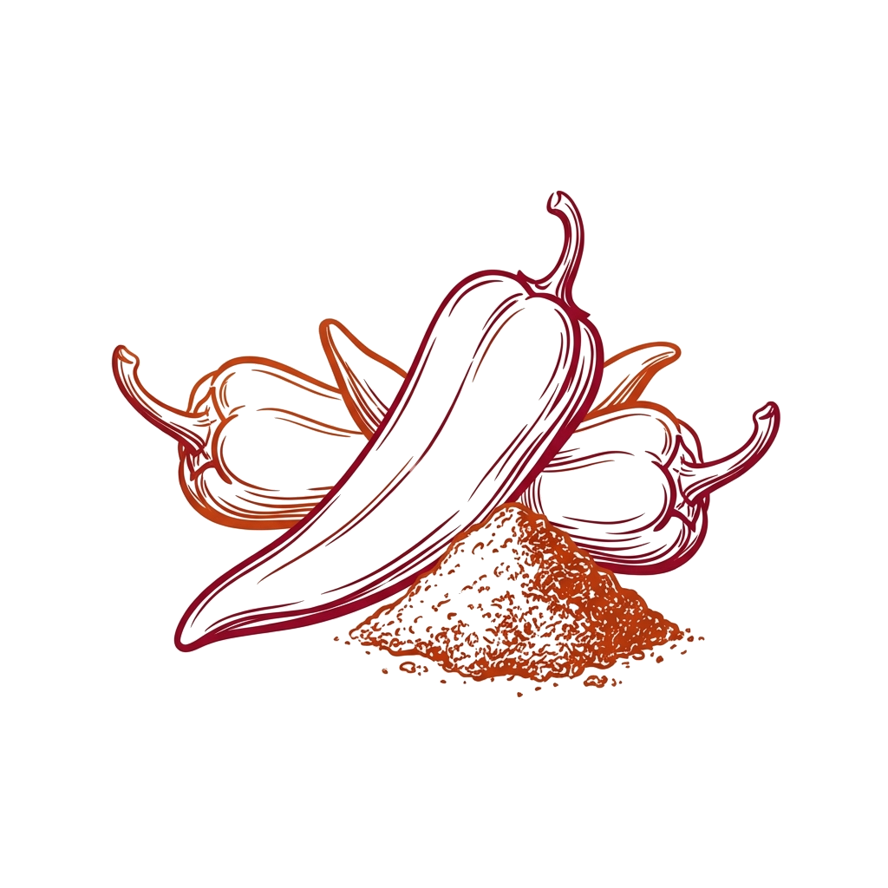
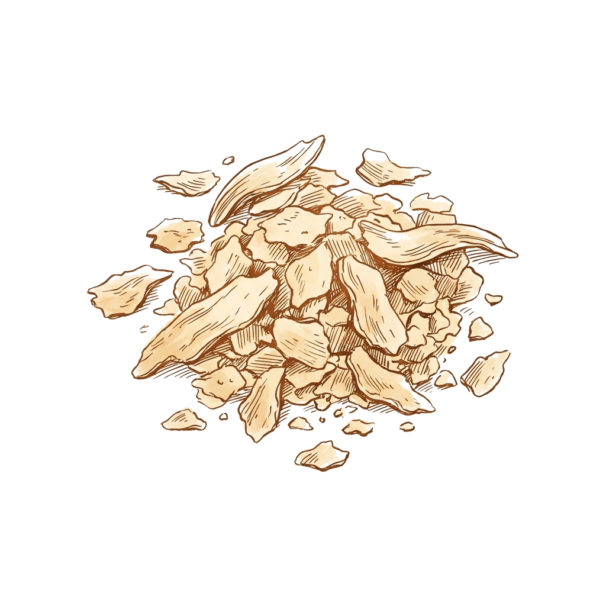

הפירוש של קנלוני באיטלקית הוא קנים גדולים, תיאור המתייחס לצורתה הצינורית של הפסטה. בגרסה טבעונית זו, ממלאים אותם בגבינת קשיו קרמית מעורבבת עם תרד חלוט, ואופים ברוטב עגבניות מתובל עד להזהבה וביעבוע.
Cannelloni significa 'cañas grandes' en italiano, lo que describe a esta pasta en forma de tubo. Esta versión vegana los rellena con un queso cremoso de castañas de cajú mezclado con espinacas, horneados en una salsa de tomate a las hierbas hasta que estén dorados y burbujeantes.
كلمة كانيلوني تعني قصب كبير بالطلياني، وهكا يوصفو شكل هالمقرونة. في هالوصفة النباتية، نعمروهم بجبن الكاجو المرحي مع السبناخ المذبل، ونطيبوهم في الفور مع صوص طماطم مفوحة لين يحمارو وتولي الصوص تبقبق.
Cannelloni means large reeds in Italian, describing this tube-shaped pasta. This vegan version fills them with a creamy cashew cheese blended with wilted spinach, then bakes them in a herb-infused tomato sauce until golden and bubbling.







- 400 g de castañas de cajú (anacardos) crudas, remojadas durante 4 horas
- 30 ml de jugo de limón
- 15 g de levadura nutricional
- 5 g de sal
- 2.5 g de pimienta negra
- 30 ml de aceite de oliva
- 120 ml de agua
- 300 g de espinacas frescas, salteadas y picadas
- 12 tubos de canelones
- 500 ml de puré de tomate (passata)
- 3 dientes de ajo, picados finamente
- 15 g de albahaca fresca, picada
- 5 g de pimentón (paprika)
- 1.Escurrir las castañas de cajú remojadas. Licuarlas con el jugo de limón, la levadura nutricional, la sal, la pimienta, el aceite de oliva y el agua hasta obtener una mezcla suave y cremosa.
- 2.Saltear ligeramente las espinacas en una sartén hasta que reduzcan su tamaño, exprimir el exceso de agua y picarlas finamente. Mezclarlas con el queso de castañas de cajú.
- 3.Preparar la salsa de tomate: cocinar a fuego lento el puré de tomate con el ajo, la albahaca, el pimentón, sal y pimienta durante 10 minutos.
- 4.Rellenar los tubos de canelones con la mezcla de castañas de cajú y espinacas usando una manga pastelera o una cuchara.
- 5.Esparcir la mitad de la salsa en una fuente para horno. Acomodar los canelones rellenos en una sola capa y cubrirlos con la salsa restante.
- 6.Cubrir con papel aluminio y hornear a 180°C durante 30 minutos. Retirar el papel y hornear por 15 minutos más, hasta que estén dorados y burbujeantes.
- 7.Dejar reposar 5 minutos antes de servir. Decorar con hojas de albahaca fresca.
- 400 גרם אגוזי קשיו טבעיים, מושרים למשך 4 שעות
- 30 מ"ל מיץ לימון
- 15 גרם שמרי בירה
- 5 גרם מלח
- 2.5 גרם פלפל שחור
- 30 מ"ל שמן זית
- 120 מ"ל מים
- 300 גרם עלי תרד טריים, חלוטים וקצוצים
- 12 גלילי קנלוני
- 500 מ"ל מחית עגבניות (פאסאטה)
- 3 שיני שום, כתושות
- 15 גרם עלי בזיליקום טריים, קצוצים
- 5 גרם פפריקה
- 1.מסננים את הקשיו המושרה. טוחנים בבלנדר יחד עם מיץ הלימון, שמרי הבירה, המלח, הפלפל, שמן הזית והמים עד לקבלת מרקם חלק וקרמי.
- 2.מאדים את התרד במחבת, סוחטים היטב מנוזלים עודפים וקוצצים דק. מערבבים עם תערובת הקשיו.
- 3.מכינים את רוטב העגבניות: מבשלים את מחית העגבניות עם השום, הבזיליקום, הפפריקה, מלח ופלפל על אש קטנה במשך כ-10 דקות.
- 4.ממלאים את גלילי הקנלוני במילוי הקשיו והתרד בעזרת שקית זילוף או כפית.
- 5.יוצקים מחצית מהרוטב לתבנית אפייה. מסדרים את הקנלוני הממולאים בשכבה אחת, ומכסים ברוטב שנותר.
- 6.מכסים ברדיד אלומיניום ואופים בתנור שחומם מראש ל-180 מעלות למשך 30 דקות. מסירים את רדיד האלומיניום ואופים 15 דקות נוספות, עד שהמאפה מזהיב ומבעבע.
- 7.מניחים למאפה להתקרר כ-5 דקות לפני ההגשה. מקשטים בעלי בזיליקום טריים.
- 2 1/2 cups raw cashews, soaked for 4 hours
- 2 tbsp lemon juice
- 3 tbsp nutritional yeast
- 1 tsp salt
- 1/2 tsp black pepper
- 2 tbsp olive oil
- 1/2 cup water
- 10 oz fresh spinach, wilted and chopped
- 12 cannelloni tubes
- 2 cups tomato passata
- 3 cloves garlic, minced
- 1/4 cup fresh basil, chopped
- 1 tsp paprika
- 1.Drain the soaked cashews. Blend with the lemon juice, nutritional yeast, salt, pepper, olive oil, and water until smooth and creamy.
- 2.Wilt the spinach in a pan, squeeze out the excess water, and chop finely. Mix with the cashew cheese.
- 3.Prepare the tomato sauce: simmer the passata with the garlic, basil, paprika, salt, and pepper for 10 minutes.
- 4.Stuff the cannelloni tubes with the cashew-spinach filling using a piping bag or a spoon.
- 5.Spread half of the sauce in a baking dish. Arrange the stuffed cannelloni in a single layer. Cover with the remaining sauce.
- 6.Cover with foil and bake at 180°C for 30 minutes. Remove the foil and bake for 15 more minutes until golden and bubbling.
- 7.Let rest for 5 minutes before serving. Garnish with fresh basil.
- زوز كيسان ونص كاجو ني، منفخ 4 سوايع
- زوز مغارف كبار عصير قارص
- 3 مغارف كبار خميرة غذائية
- مغرفة صغيرة ملح
- شطر مغرفة صغيرة فلفل أكحل
- زوز مغارف كبار زيت زيتونة
- شطر كاس ماء
- زوز ربطات سبناخ، مذبل ومقصوص
- 12 كعبة كانيلوني
- زوز كيسان صوص طماطم مرحية (باساتا)
- 3 سنون ثوم، مرحيين
- ربع كاس حبق فريشك، مقصوص
- مغرفة صغيرة فلفل أحمر (بابريكا)
- 1.نصفيو الكاجو المنفخ. نرحيوه في الميكسور مع عصير القارص، الخميرة الغذائية، الملح، الفلفل الأكحل، زيت الزيتونة، والماء لين يولي خليط رطب وكريمي.
- 2.نذبلو السبناخ في مقلة، نعصرو منو الماء الزايد، ونقصوه جويد. نخلطوه مع جبن الكاجو.
- 3.نحضرو صوص الطماطم: نطيبو الطماطم المرحية مع الثوم، الحبق، الفلفل الأحمر، الملح والفلفل الأكحل على نار هادية لمدة 10 دقايق.
- 4.نعمرو كعبات الكانيلوني بحشو الكاجو والسبناخ باستعمال بوش (poche) ولا مغرفة.
- 5.نفرشو شطر الصوص في طبق الفور. نستفو كعبات الكانيلوني المعمرين بجنب بعضهم في طبقة وحدة. نغطيوهم بالصوص اللي بقات.
- 6.نغطيو الطبق ببابيي ألمنيوم ونطيبوه في فور مسخن على 180 درجة لمدة 30 دقيقة. نحيو الألمنيوم ونزيدو نطيبوه 15 دقيقة أخرى لين يحمار ويبقبق.
- 7.نخليوه يرتاح 5 دقايق قبل ما نقدموه. نزينوه بورقات حبق فريشك.